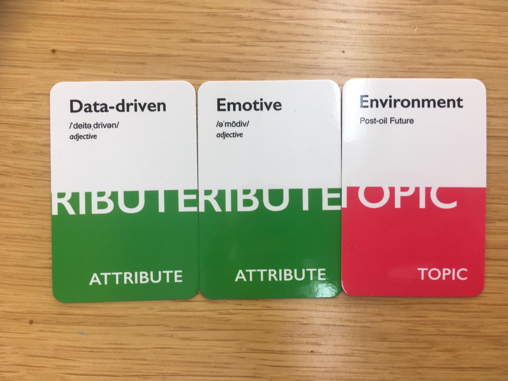
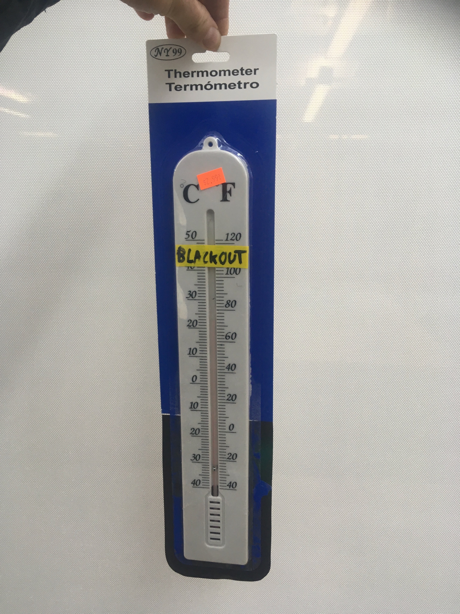

Critical Objects Ideation
From Props to Prototypes
"thinking through to the unexpected, unconventional, undisciplined and unheard-of" - Julian Bleecker
Design Fiction
https://nearfuturelaboratory.com/essays/2025/05/from-props-to-prototypes/
The term was first used by Bruce Sterling, a science fiction writer who worked to create the genre of cyberpunk, in 2005. Julian Bleecker picks it up and runs with it in 2008 in his essay "Design Fiction: A Short Essay on Design, Science, Fact and Fiction" and the field of Design Fiction as a futures design approach was born. The idea is to prototype in ways which help us to imagine and wonder through physical creation. Bleecker says that this is a type of prototyping "that couples the speculation inherent in design with the creative license of fiction and the pragmatic, imminent reality of fact."
Histofuturism
Octavia Butler's Guide to Surviving the Apocalypse
We continue to investigate the intersection of science fiction and design with Octavia Butler, a writer who coined the term Histofuturism. Butler identifies that the future will be a reflection of the past, but this time enhanced by technological progress. Butler is also known for the term Afro-Futurism, an intellectual movement seeking to explore the potentials in the black community as informed by resilience and regeneration contrasting with historical abuses as faced in the American project. She was concerned with the ways that climate change will generate and continue trends of inequality as the disproportionate brunt of the damage would be shouldered by the poor. History plays a central role in her work, Butler viewed herself as in a particular historical moment as noted by her recordings of climate events within her life. Dying in 2006, she was able to see beyond the "end of history" in her time and use fiction to imagine the complications of the future to come.
Ideation Session
In this ideation session we are using a concept called Design Fiction to create props from an imagined far future. This exercise functions to pose questions about how this future could be designed. We are specifically designing props for a dollar store, creating the type of product which filters down into the lowest economical range. This is a great source of design because each and every object in a dollar store was touched by a huge team of people who all worked hard to make the product as cheap as possible. This is product in a pure form, unmediated. So then working in this way allows us to imagine a future from the bottom up.
I drew 3 cards which determined the objects I would create:
I had an hour and a half or so to come up with two items from dollar store detritus which for the topic of a post oil future with the essential attributes of data driven and emotive respectively.
I figure the most important thing about a future without oil would be a lack of energy and a shift in the way we relate to its consumption, so I made a solar powered lamp which sought to help people in this future budget their energy usage in relation to time with three different modes of operation. I spent a long time collaging together text to make the little informational card rich with as much in-world detail as I could get away with. I believe this was a bad strategy as when I presented it to the rest of the class there was nobody close enough to see the work I had done. The object did not speak for itself, and its packaging was too quiet. I thought this one would be emotive.
In making my first object, I ran out of time and tried to think creatively about my second object, what could I do in ten seconds after wasting the rest of my building session? It needed to be data driven, and I earlier had grabbed a thermometer because it seemed so reliable. As the clock ticked down, I took yellow tape and stuck it across 105 degrees Fahrenheit. Although temperature as read by an analog device is not traditionally thought of as "Data," I feel that the usage of tape could illustrate the boolean logic I associate with a lived experience of an energy conservation regime. Given that climate regulation is a large power draw in summer months, I imagine in a post oil future we will see an increase in our consciousness for when power is most precious, with environmental factors having a more immediate impact on our lives.
The critique I was given emphasized how close I had chosen to set the future I had imagined and pushed me to imagine further into the future. I found this exercise rewarding as, in the past, I have not played the role of environmental storyteller or designer and have work to do to come up to speed on the subjects. Creating things quickly and getting critique on them immediately is a great way to grow this skillset.